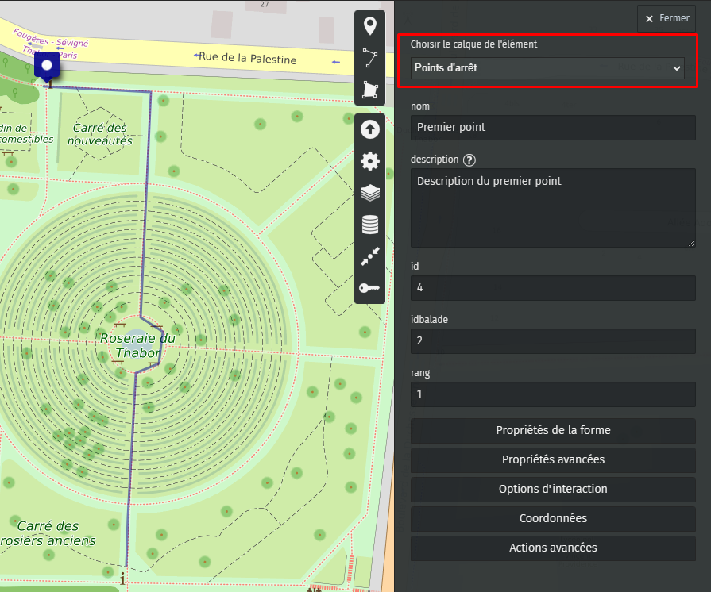

Étape 1 : Création des données des balades avec uMap
-
1.1 : Ouverture du site et import d'un fichier de configuration
Commencez par aller sur le site uMap pour commencer la création des balades : https://umap.openstreetmap.fr/
Ensuite, cliquer sur le bouton pour importer un exemple de données sur uMap comme sur l'image ci-dessous :

Un panneau s'ouvre alors pour importer un fichier de configuration comme sur la capture ci-dessous. Sélectionnez le fichier carte_balade_exemple.umap téléchargable ici : carte_balade_exemple.umap
Vous pouvez cliquer sur le bouton Importer et le fichier de configuration sera chargé dans uMap (cf. image ci-dessous). Vous pouvez alors commencer à créer vos balades.

-
1.2 : Création d'une balade (entité linéaire)
Pour créer une entité linéaire, vous devez cliquer sur le bouton Dessiner une ligne comme sur la capture ci-dessous :
Ensuite, vous pouvez créer les points de balade sur la carte en cliquant pour chaque point. Pour terminer la création de la balade, il faut cliquer sur le dernier point de la balade et un menu s'ouvre pour renseigner les informations de la balade comme sur la capture ci-dessous :
Si vous n'avez pas le formulaire pour renseigner les informations de la balade, vous pouvez changer le calque de l'élément en Balades.
Les informations à renseigner pour une balade sont les suivantes :
- Nom : le titre de la balade
- Description : la description de la balade
- Id : l'identifiant de la balade (doit être unique et un entier)
- Couleur : la couleur de la balade sous forme de code hexadécimal exemple : #0380fc (palette de couleurs)
Une fois les informations renseignées, vous pouvez cliquer sur le bouton Fermer pour créer d'autres balades et des points d'intérêt. Vous pouvez passer à l'étape suivante pour créer les points d'intérêt.
-
1.3 : Création d'un point d'intérêt (entité ponctuelle)
Pour créer une entité ponctuelle, vous devez cliquer sur le bouton Ajouter un marqueur comme sur la capture ci-dessous :
Ensuite, vous pouvez créer un point d'intérêt en cliquant sur la carte. Après avoir cliqué sur la carte, un menu s'ouvre pour renseigner les informations du point d'intérêt comme sur la capture ci-dessous :
 - Nom : le titre du point d'intérêt
- Description : la description du point d'intérêt
- Id : l'identifiant du point d'intérêt (doit être unique et un entier)
- Idbalade : l'identifiant de la balade à laquelle le point d'intérêt est rattaché (doit être un entier)
- Rang : le rang du point d'intérêt dans la balade (doit être un entier)
Si vous n'avez pas le formulaire pour renseigner les informations du point d'intérêt, vous pouvez changer le calque de l'élément en Points.
Les informations à renseigner pour un point d'intérêt sont les suivantes :
Une fois les informations renseignées, vous pouvez cliquer sur le bouton Fermer pour créer d'autres balades et des points d'intérêt.